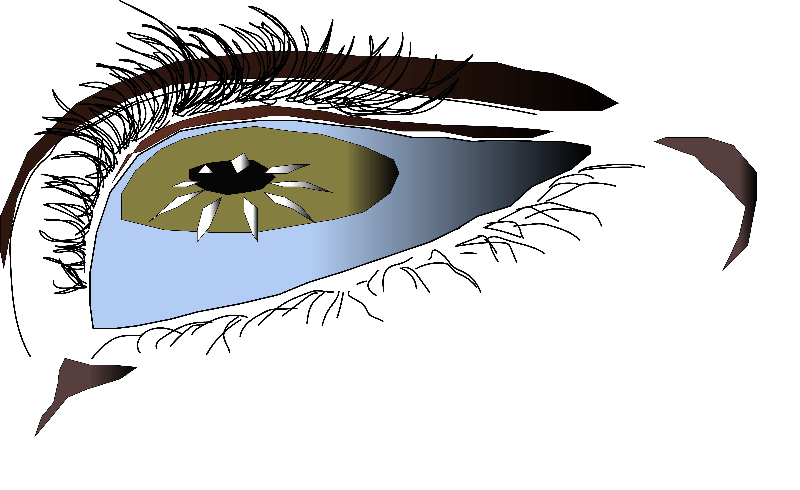
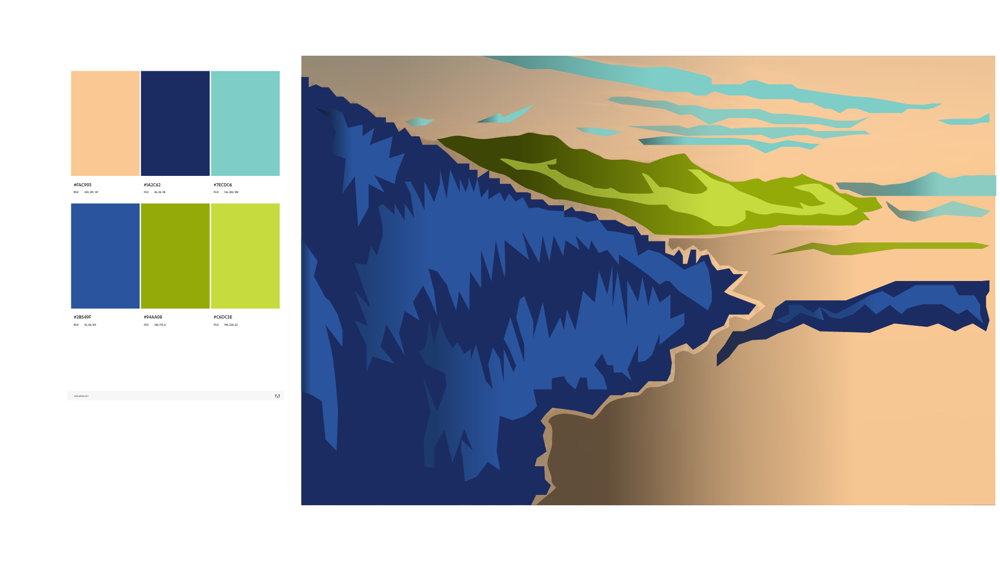

In the assignment, I've created an emotive/expressive eye illustration using basic shaping tools, editing colors through a color limitied sytem. During the process, I organized my Illustrator layers by naming each layer the parts of the eye (eyeball, iris, pupil, Upper/bottom eyelid, etc). Naming the layers precisely made is easier and more comprehensive in knowing which part of the eye to edit. For the editing part, I used tools such as pen guides in keeping my line strokes algined with each part of the eye to prevent them from intersecting and used drawing pencils to create lines on in difficult eye areas. Finally, I imported and blended colors in each part using the gradient scale in constrating light and shadow. After finishing the process, I exported the illustration as a PNG for the web.

In the second half of the Homework 5 I created an illustrated environment, importing a photograph of an ocean and mountain view as its own template layer. Before editing the layer with Illustrator, I locked in preventing the photograph from moving during the composition progress. During the process, I've separated my illustration into three sections consisting of foreground, middle ground, and background layers in creating paths and parts for each layer. For each layer I used three mains colors from a triadic palette and sub colors in creating shape designs for my illustration. I also used the gradient scale in giving the design a more 3D dimension using the triadic palette colors. In addition, I avoided Image Trace, manually using the pen tool in creating the structure or my path for each section, while using the shape tool in creating my own design. I made the design in order to make it intentional for the environment. Once the composition was complete, I exported the final design and structure as a 1920x1080 PNG using Exports for Screens.

Once I understood using vector shapes, pattern strokes, and sections of tools on Illustrator, it helped me become more confident in wanting to frequently utilize Illustrator. This specific assignment was a challenge at first, but was also fun and motivating. In creating the composition of paths or pieces in each section of both Emmotiveeye and Illustrated Environment, I used many different methods such as pattern scale, fill color tool, gradient scale, and pattern paths. Those methods really helped in creating the composition in having a developed and interesting connection to the structure. When I did Emotiveeye, I used the pen tool, basic tools such as paint brush, and fill color in creating my eye design, while showing the expression of the eye. Then in the Illustrated Environment section, I used the same tools, but also utilized more methods in making complex shapes and designs. In both sections, I used the gradient scale in giving a more intentional 3D dimensional look to create more depth. The Gradient scale helped the Emotiveeye in displaying the emotion of the eye from the photograph but was more expressive. It also created a virtual reality feeling and a sense of digital expressionism in the Illustrated Environment. The design posters from the lecture and laboratory classes helped me get an idea on the design for Homework 5, in learning the basics of Adobe Illustrator. This assignment is so far the most interesting due to how you play with the designs while not being afraid of errors.